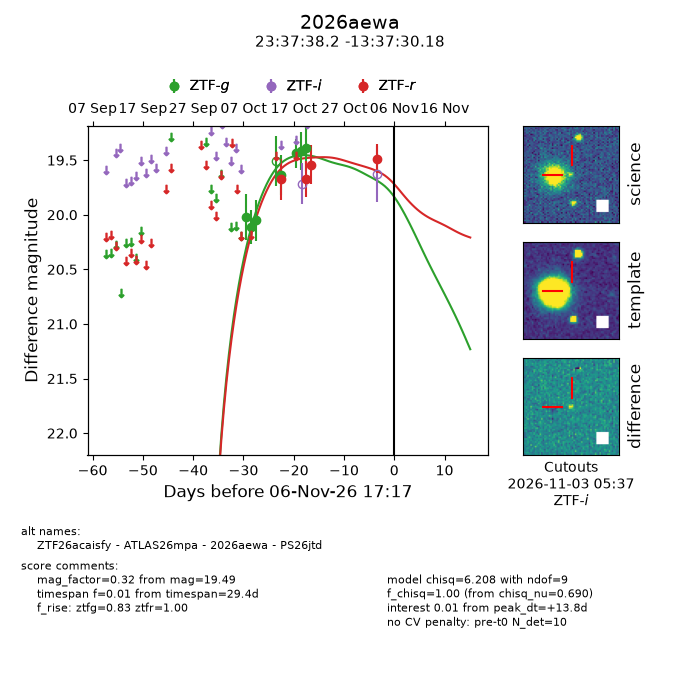
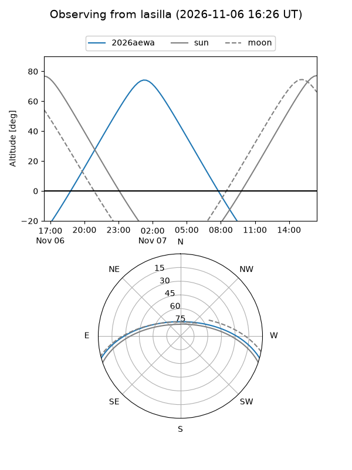
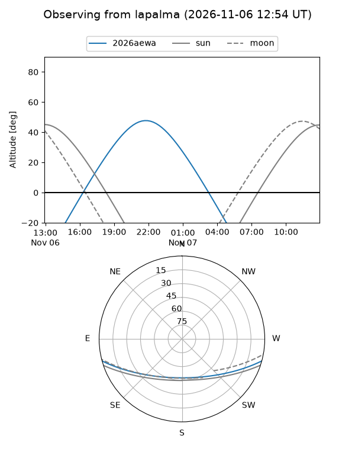
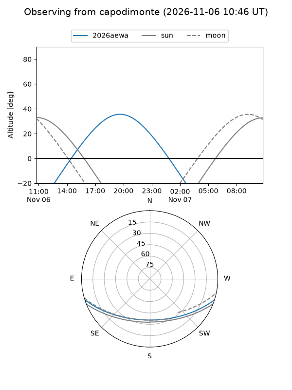
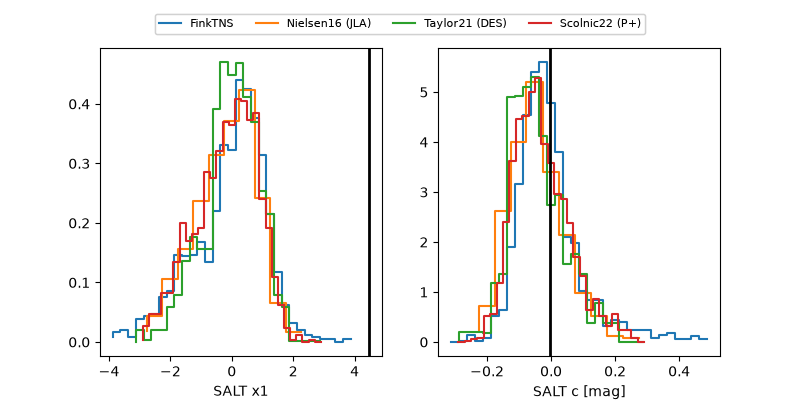

2026aewa
Target 2026aewa at 2026-11-06 17:19
Aliases and brokers:
FINK-ZTF: ztf.fink-portal.org/ZTF26acaisfy
Lasair-ZTF: lasair-ztf.lsst.ac.uk/objects/ZTF26acaisfy
ALeRCE-ZTF: alerce.online/object/ZTF26acaisfy
YSE-PZ: ziggy.ucolick.org/yse/transient_detail/2026aewa
TNS name: wis-tns.org/object/2026aewa
Direct TNS query: direct search
alt names
ZTF26acaisfy (ztf,fink_ztf)
2026aewa (tns,yse)
ATLAS26mpa (atlas)
PS26jtd (panstarrs)
Coordinates:
equatorial (ra, dec) = 354.4094,-13.62505
equatorial (HMS+DMS) = 23:37:38.25,-13:37:30.18
galactic (l, b) = (67.3474,-68.10956)
Flags:
peak dt: +13.8
Photometry:
last ztfg=19.39, ztfr=19.49
7 ztfg, 4 ztfr detections
Lightcurve

Visibility



Additional plots
